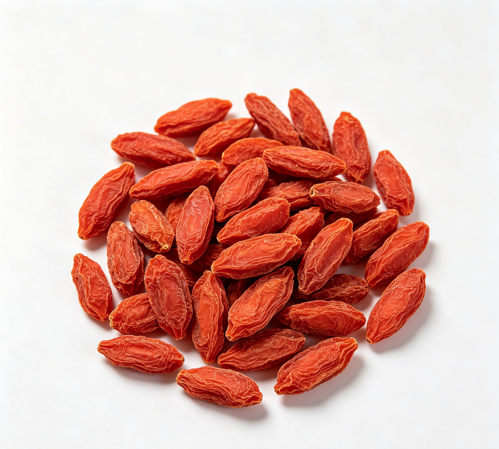

📋 基本信息
中文名枸杞子
拉丁名Lycium barbarum L.
英文名Fructus Lycii
产地科属划分：植物界被子植物门双子叶植物纲，茄科Solanaceae，枸杞属Lycium；药典基原为宁夏枸杞Lycium barbarum L.。主产地：主产于宁夏（中宁为道地产区）、甘肃、青海、新疆、内蒙古、河北等地，以宁夏中宁所产质量最佳，习称'宁夏枸杞''中宁枸杞'，为地理标志产品。
性状本品呈类纺锤形或椭圆形，长6～20mm，直径3～10mm。表面红色或暗红色，顶端有小突起状的花柱痕，基部有白色的果梗痕。果皮柔韧，皱缩；果肉肉质，柔润。种子20～50粒，类肾形，扁而翘，长1.5～1.9mm，宽1～1.7mm，表面浅黄色或棕黄色。气微，味甜。【《中国药典》2020年版一部】
用法用量6～12g。【《中国药典》2020年版一部】
贮藏置阴凉干燥处，防闷热，防潮，防蛀。【《中国药典》2020年版一部】
☯ 传统属性
四气平
五味甘
归经肝、肾经
功能主治滋补肝肾，益精明目。用于虚劳精亏，腰膝酸痛，眩晕耳鸣，阳痿遗精，内热消渴，血虚萎黄，目昏不明。【《中国药典》2020年版一部】
禁忌症《中国药典》未列注意事项。本草文献记载：外邪实热、脾虚有湿及泄泻者慎服；《本草经疏》谓'脾胃薄弱，时时泄泻者勿入'。感冒发热、身体有炎症期间不宜食用。【《本草经疏》《中华本草》】
毒性枸杞子安全性良好，被列为药食两用物质。常见不适为过量食用引起'上火'症状（口干、咽痛、流鼻血、目赤），一般每日超过20～30g易发生；脾胃虚寒者过量可致腹泻、腹胀。含糖量较高，糖尿病患者大量食用可能影响血糖。少见过敏反应（皮疹）。有与华法林相互作用（增强抗凝、INR升高）的病例报告，服用抗凝药者应谨慎。
适宜体质气虚质、平和质、阴虚质
适宜证型气虚证、脾胃气虚证、阴虚证、肺阴虚证
🔬 现代研究
主要成分主要含枸杞多糖（LBP，约5%～8%，为水溶性多糖混合物，药典以葡萄糖计≥1.8%）、甜菜碱（betaine，药典≥0.50%）、类胡萝卜素（玉米黄质及其二棕榈酸酯即枸杞红素、β-胡萝卜素）、黄酮类（芦丁、槲皮素）、香豆素类（东莨菪素、莨菪亭）、酚酸类、多种氨基酸（18种，含8种必需氨基酸）、维生素（C、B1、B2、烟酸）、甜菜碱衍生物、脑苷脂、亚油酸等脂肪酸，以及锌、铁、硒、锗等微量元素。代表性成分：枸杞多糖、甜菜碱、玉米黄质二棕榈酸酯。
药理作用已报道的药理活性：（1）免疫调节：枸杞多糖能增强巨噬细胞吞噬功能、促进淋巴细胞增殖与细胞因子分泌；（2）抗氧化、抗衰老：清除自由基、提高SOD等抗氧化酶活性；（3）护眼：玉米黄质类物质保护视网膜、改善视疲劳，用于年龄相关性黄斑变性辅助干预；（4）保肝：甜菜碱及多糖减轻化学性肝损伤、抗脂肪肝；（5）调节糖脂代谢：辅助降血糖、降血脂；（6）神经保护、改善记忆；（7）抗疲劳、抗肿瘤辅助作用、保护生殖系统（改善精子质量）等。多数证据来自动物与体外实验，部分有人体试验支持。
食疗功效传统食疗认为枸杞子性平味甘，能滋阴补肾、养肝明目、润肺生津，常用于肝肾不足所致的头晕目眩、视力减退、腰膝酸软、消渴等。经典食疗方如枸杞菊花茶（清肝明目）、枸杞红枣粥（补气血）、枸杞银耳羹（滋阴润肺）、枸杞炖鸡（补虚益精）。现代营养角度，枸杞子富含枸杞多糖、类胡萝卜素、甜菜碱及多种维生素矿物质，有助于抗氧化、保护视力、调节免疫，适合作为日常保健食材适量长期食用。
食养禁忌
🏭 产品形态与潜在功能
推荐形态
粉末丸剂干果
潜在功能